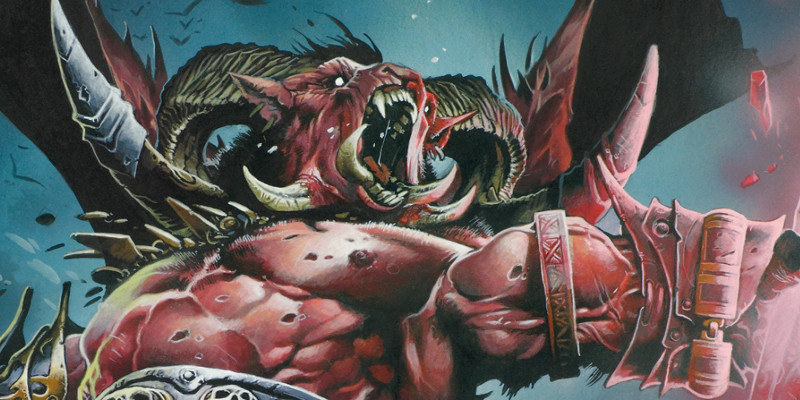

Équilibrer un scénario
Le DMG n'est pas très clair sur la manière d'équilibrer une aventure en termes de rencontres et de récompenses. Les infos y sont, mais dispersées, et il n'y a pas de résumé. Voici donc un guide d'après ce qui a pu être compilé.
Nombre de rencontres par aventure
Un groupe doit pouvoir en moyenne affronter entre 6 et 8 rencontres de difficulté moyenne ou difficile chaque jour, et deux repos courts doivent pouvoir être pris chaque jour.
Trésors
L'application Encounter Builder d'AideDD reprend les tables du DMG (bien faites et très complètes) et offre une manière simple de déterminer les trésors d'une aventure. Un gros trésor est censé être offert aux PJ à chaque aventure.
Objets magiques
La table ci-dessous indique, en fonction du niveau des PJ, la rareté des objets magiques qu'ils devraient trouver. Le chiffre entre parenthèses indique le bonus moyen de ces objets.
| Niveaux | Rareté des objets magiques |
| 1-4 | Commun et peu commun |
| 5-10 | Rare (+1) |
| 11-16 | Très rare (+2) |
| 17-20 | Légendaire (+3) |
Rythme de progression d'un PJ
Le DMG page 261 indique que le niveau 2 et le niveau 3 devraient chacun être atteints au bout d'une seule séance de jeu (4 heures de jeu). Par la suite, les autres niveaux devraient chacun prendre entre 2 et 3 séances pour être atteints. De plus, si l'on considère que 1 jour en jeu = 1 séance = 1 mission, le même DMG page 133 laisse entendre qu'il faut en moyenne 45 séances pour arriver au niveau 20 (7 du niveau 1 à 4, 18 du niveau 5 à 10, 12 du niveau 11 à 16 et 8 du niveau 17 à 20). Car, bien entendu, les PJ ne vont pas réussir à 100% toutes les missions qui leur seront proposées. On suppose alors un taux de réussite de 80%, c'est-à-dire que chaque 4 missions, il va leur en falloir une de plus pour atteindre les PX prévus.
Si on assemble tout cela, avec les hypothèses avancées ci-dessus, on obtient la table suivante, qui colle parfaitement aux indications données par WotC. Notez que les PX indiqués sont pour 1 personnage.
| Niveau du PJ | Aventures jouées | PX moyen par aventure | PX cumulés | PX requis pour le prochain niveau |
|---|---|---|---|---|
| 1 | 1 | 300 | 300 | 300 |
| 2 | 2 | 600 | 900 | 900 |
| 3 | 3 | 1 200 | 2 100 | 2 700 |
| 4 | 1 200 | 3 300 | 2 700 | |
| (5) | ||||
| 4 | 6 | 1 700 | 5 000 | 6 500 |
| 7 | 1 700 | 6 700 | 6 500 | |
| 5 | 8 | 3 500 | 10 200 | 14 000 |
| 9 | 3 500 | 13 700 | 14 000 | |
| (10) | ||||
| 11 | 3 500 | 17 200 | 14 000 | |
| 6 | 12 | 4 000 | 21 200 | 23 000 |
| 13 | 4 000 | 25 200 | 23 000 | |
| 7 | 14 | 5 000 | 30 200 | 34 000 |
| (15) | ||||
| 16 | 5 000 | 35 200 | 34 000 | |
| 8 | 17 | 6 000 | 41 200 | 48 000 |
| 18 | 6 000 | 47 200 | 48 000 | |
| 19 | 6 000 | 53 200 | 48 000 | |
| (20) | ||||
| 9 | 21 | 7 500 | 60 700 | 64 000 |
| 22 | 7 500 | 68 200 | 64 000 | |
| 10 | 23 | 9 000 | 77 200 | 85 000 |
| 24 | 9 000 | 86 200 | 85 000 | |
| (25) | ||||
| 11 | 26 | 10 500 | 96 700 | 100 000 |
| 27 | 10 500 | 107 200 | 100 000 | |
| 12 | 28 | 11 500 | 118 700 | 120 000 |
| 29 | 11 500 | 130 200 | 120 000 | |
| (30) | ||||
| 13 | 31 | 13 500 | 143 700 | 140 000 |
| 14 | 32 | 15 000 | 158 700 | 165 000 |
| 33 | 15 000 | 173 700 | 165 000 | |
| 15 | 34 | 18 000 | 191 700 | 195 000 |
| (35) | ||||
| 36 | 18 000 | 209 700 | 195 000 | |
| 16 | 37 | 20 000 | 229 700 | 225 000 |
| 17 | 38 | 25 000 | 254 700 | 265 000 |
| 39 | 25 000 | 279 700 | 305 000 | |
| (40) | ||||
| 18 | 41 | 27 000 | 306 700 | 305 000 |
| 42 | 27 000 | 333 700 | 355 000 | |
| 19 | 43 | 30 000 | 363 700 | 355 000 |
| 20 | 44 | 40 000 | 403 700 | |
| (45) |
Customiser les PNJ
Il n'y a pas de science exacte pour créer un PNJ à D&D 5. Même si le DMG dit qu'on peut utiliser la même méthode pour un PNJ que pour un PJ, cette complexité n'est pas dans le style de cette édition. Le plus simple pour mettre un PNJ unique dans votre aventure est de partir d'un des PNJ proposés dans le Monster Manual ou le Volo's Guide to Monsters et de le customiser. Pour cela, le principal est de déterminer le bonus de maîtrise du PNJ de base, qui découle directement de son FP, comme indiqué dans la table ci-dessous. Avec cela, vous pouvez maintenant changer les valeurs de caractéristiques, le niveau, les armes et les armures, et ainsi de suite. Vous devriez retomber rapidement sur vos pieds avec les références suivantes :
- le nombre de langues est plus ou moins égal au bonus d'Intelligence +1.
- la maîtrise des jets de sauvegarde apparaît à partir du FP 2 ou 3, pas avant.
- tous les DV sont des d8 mais les lanceurs de sorts ont moins de DV pour un même FP.
- pour le FP des lanceurs de sorts, utilisez les références de la table ci-dessous.
FP |
PX |
Bonus de maîtrise |
Valeur max de carac. |
PNJ |
Niveau de lanceur de sorts |
| 1/8 | 25 | +2 | 13 | ||
| 1/4 | 50 | +2 | 14 | Acolyte | 1 (clerc) |
| Apprenti magicien | 1 (magicien) | ||||
| 1/2 | 100 | +2 | 15 | ||
| 1 | 200 | +2 | 16 | ||
| 2 | 450 | +2 | 17 | Barde | 4 (barde) |
| Druide | 4 (druide) | ||||
| Fanatique | 4 (clerc) | ||||
| Prêtre | 5 (clerc) | ||||
| Homme-lézard, chaman | 5 (druide) | ||||
| 3 | 700 | +2 | 17 | Illusionniste | 7 (magicien) |
| 4 | 1 100 | +2 | 18 | ||
| 5 | 1 800 | +3 | 18 | Enchanteur | 9 (magicien) |
| Transmutateur | 9 (magicien) | ||||
| 6 | 2 300 | +3 | 18 | Invocateur | 9 (magicien) |
| Mage | 9 (magicien) | ||||
| 7 | 2 900 | +3 | 18 | Drow, mage | 10 (magicien) |
| 8 | 3 900 | +3 | 19 | Drow, prêtresse | 10 (clerc) |
| Devin | 15 (magicien) | ||||
| 9 | 5 000 | +4 | 19 | Prêtre de guerre | 9 (clerc) |
| Évocateur | 12 (magicien) | ||||
| Nécromant | 12 (magicien) | ||||
| Abjurateur | 13 (magicien) | ||||
| 10 | 5 900 | +4 | 19 | Seigneur momie | 15 (clerc) |
| 11 | 7 200 | +4 | 19 | ||
| 12 | 8 400 | +4 | 20 | Archidruide | 18 (druide) |
| Archimage | 18 (magicien) |
Des PX pour les pièges
WotC a confirmé qu'à D&D 5 les pièges ne donnent pas de PX (même si dans le Xanathar's Guide to Everything apparait une option pour les pièges complexes). La table qui suit présente toutefois une option pour traiter les pièges comme des monstres, et ainsi savoir quel(s) piège(s) mettre dans une aventure en fonction du niveau des PJ et combien de PX ils pourraient rapporter. Notez que les scénarios d'AideDD utilisent cette table.
La colonne Niveau des PJ indique le niveau minimum que devraient avoir les PJ face à un tel piège, car il correspond à une rencontre potentiellement mortelle. Si vous souhaitez que votre piège ne représente qu'un challenge "gênant" ou "dangereux" pour votre groupe, choisissez un piège d'un niveau inférieur, comme vous le faites pour les monstres.
| FP | PX | Dégâts infligés | DD de sauvegarde | Niveau des PJ |
|---|---|---|---|---|
| 1/8 | 25 | 1d4 (2-3) | 13 | 1 |
| 1/4 | 50 | 1d6 / 1d8 (4-5) | 13 | 1 |
| 1/2 | 100 | 1d10 (6-8) | 13 | 1 |
| 1 | 200 | 2d10 (9-14) | 13 | 2-3 |
| 2 | 450 | 3d10 (15-20) | 13 | 4 |
| 3 | 700 | 4d10 (21-26) | 13 | 5 |
| 4 | 1 100 | 5d10 (27-32) | 14 | 6-7 |
| 5 | 1 800 | 6d10 (33-38) | 15 | 8 |
| 6 | 2 300 | 8d10 (39-44) | 15 | 9-10 |
| 7 | 2 900 | 9d10 (45-50) | 15 | 11 |
| 8 | 3 900 | 10d10 (51-56) | 16 | 12 |
| 9 | 5 000 | 11d10 (57-62) | 16 | 13-14 |
| 10 | 5 900 | 12d10 (63-68) | 16 | 15 |
| 11 | 7 200 | 13d10 (69-74) | 17 | 16 |
| 12 | 8 400 | 14d10 (75-80) | 17 | 17-18 |
| 13 | 10 000 | 15d10 (81-86) | 18 | 19 |
| 14 | 11 500 | 16d10 (87-92) | 18 | 20 |

Par blueace